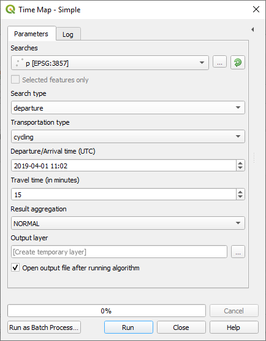

The TimeMap feature allows to find shapes of zones reachable within corresponding travel time using different transportation methods.
The simplified algorithm is easier to work with than the advanced one, and covers most of the use cases.
The simplified dialog looks like this :

| Searches | A point layer representing the coordinates. You can check "restrict to selected features" if you want to use only some of the points of the layer. |
|---|---|
| Search type | Choose "departure" or "arrival" depending on if you want to search according to departure or arrival time. |
| Means of transport | Choose which transportation mode to consider. |
| Departure/Arrival time | The departure or arrival time. Be careful, this must be specified in universal time (UTC) ! |
| Travel time | The duration of the travel in seconds. |
| Result aggregation | Choose "union" to return the union of all polygons, or "intersection" to return the intersection. |
| Output layer | Where to save the results. If you leave this empty, the results will be loaded as a temporary layer |